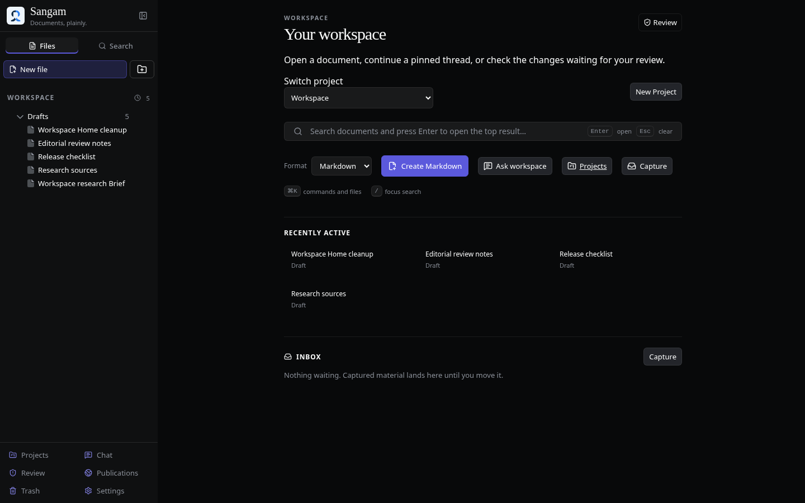
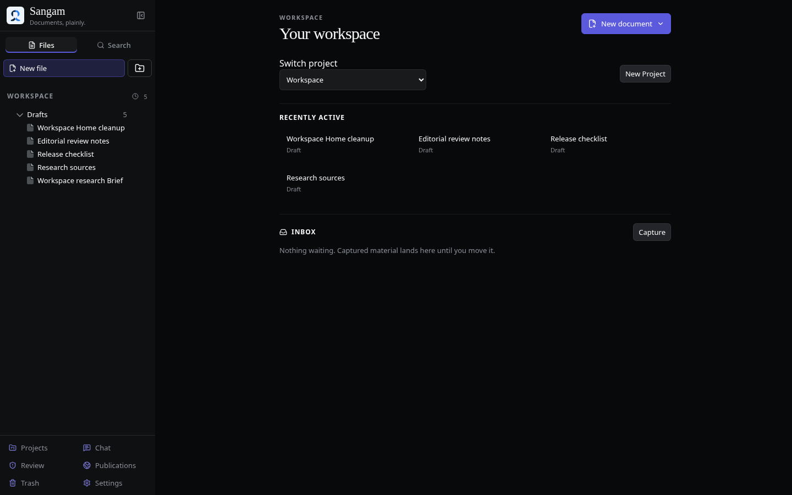

Sangam · issue #375
Return to your work.
Home now puts recent documents below project context. One New document menu offers Markdown and HTML, and Capture stays with Inbox.
Beforemain · bbe647d

Quick search and several action rows push recent documents down.
AfterPR #394 · be6e67e

Recent documents appear sooner. On mobile, all four documents and Inbox fit in this viewport.
Search, Chat, Projects and Review remain available in the workspace sidebar. Document creation still opens the editor with focus ready for writing.
Review PR #394